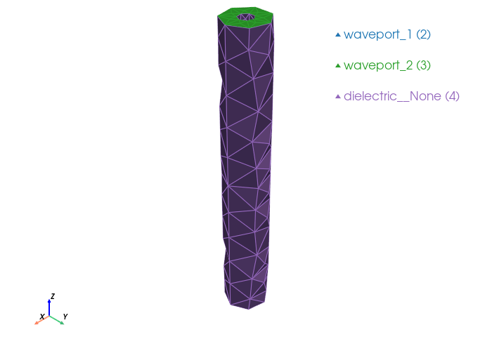

Coaxial Cable#
A coaxial waveguide: an annular dielectric region (outer cylinder with inner cylinder removed). The cylinder walls (inner and outer conductors) are PEC, and the top and bottom annular faces are waveports.
We build the geometry with a boolean cut, use selectors to pick the two end faces, define entities for the dielectric volume and the two waveport surfaces, then generate the mesh, write the Palace config, run the simulation, and plot the S parameters.
import gmsh
from palacetoolkit.geometry import Selector
from palacetoolkit.mesh import (
Entity,
run_entity_pipeline,
create_graded_mesh,
generate_3d_mesh,
)
from palacetoolkit.simulation import (
generate_palace_config_from_entities,
run_palace,
)
from palacetoolkit.postpro import s_params
from palacetoolkit.viz import view_mesh
Geometry parameters#
A short coaxial cable segment. The inner conductor radius r_inner, outer conductor radius r_outer, and length length define the annular dielectric region.
r_inner = 0.5e-3 # inner conductor radius [m]
r_outer = 1.5e-3 # outer conductor radius [m]
length = 20.0e-3 # coax length along z [m]
# Frequency sweep
freq_min = 0.1e9 # 0.1 GHz
freq_max = 5.0e9 # 5 GHz
freq_step = 0.1e9 # 100 MHz steps
Build the annular geometry#
Create the outer cylinder and cut the inner cylinder from it to produce the annular dielectric region.
gmsh.initialize()
gmsh.option.setNumber("General.Terminal", 1)
gmsh.model.add("coax")
# Outer and inner cylinders
outer = gmsh.model.occ.addCylinder(0, 0, 0, 0, 0, length, r_outer)
inner = gmsh.model.occ.addCylinder(0, 0, 0, 0, 0, length, r_inner)
# Cut: outer minus inner → annular volume
annular, _ = gmsh.model.occ.cut([(3, outer)], [(3, inner)], removeObject=True, removeTool=True)
gmsh.model.occ.synchronize()
annular_tags = [t for d, t in annular if d == 3]
print(f"Annular volume tags: {annular_tags}")
Info : [ 0%] Difference
Info : [ 10%] Difference
Info : [ 20%] Difference
Info : [ 30%] Difference
Info : [ 40%] Difference
Info : [ 50%] Difference
Info : [ 60%] Difference
Info : [ 70%] Difference - Filling splits of edges
Info : [ 80%] Difference - Making faces
Info : [ 90%] Difference - Classify solids
Annular volume tags: [1]
Select the two waveport faces#
Using the Selector API bound to the annular volume — pick the faces at z=0 and z=length. Each end face is an annulus (a ring-shaped surface).
# Bind the selector to the annular volume — only its boundary faces are considered.
# This mirrors build123d/cadquery where selectors operate on a specific shape.
sel = Selector((3, annular_tags[0]))
# cadquery-style: faces at a given coordinate
# The seam split may fragment the end faces into multiple pieces, so we
# collect all faces at each z and combine their tags.
port1_faces = sel.faces_at_z(0.0)
port2_faces = sel.faces_at_z(length)
assert len(port1_faces) >= 1, f"Expected faces at z=0, got {len(port1_faces)}"
assert len(port2_faces) >= 1, f"Expected faces at z=length, got {len(port2_faces)}"
port1_tags = [f.tag for f in port1_faces]
port2_tags = [f.tag for f in port2_faces]
print(f"Port 1 (z=0): tags={port1_tags}")
print(f"Port 2 (z=length): tags={port2_tags}")
Port 1 (z=0): tags=[7]
Port 2 (z=length): tags=[6]
Define entities#
The annular volume is a dielectric (vacuum, εᵣ=1). The two end faces are waveports. The remaining exterior surfaces (inner and outer cylinder walls) are PEC — they appear as dielectric__None in the physical group map and must be explicitly claimed.
entities = [
Entity(
name="dielectric",
dim=3,
btype="dielectric",
mesh_order=0,
tags=annular_tags,
eps_r=1.0,
mu_r=1.0,
loss_tan=0.0,
),
Entity(
name="waveport_1",
dim=2,
btype="waveport",
mesh_order=1,
tags=port1_tags,
mode=1,
excitation=True,
),
Entity(
name="waveport_2",
dim=2,
btype="waveport",
mesh_order=2,
tags=port2_tags,
mode=1,
excitation=False,
),
# PEC walls — the exterior surfaces of the dielectric (inner & outer conductors)
Entity(
name="dielectric__None",
dim=2,
btype="pec",
mesh_order=3,
tags=[],
),
]
pg_map = run_entity_pipeline(entities)
print("Physical group map:", pg_map)
Physical group 'dielectric' (dim=3): pg=1, tags=[1]
Physical group 'waveport_1' (dim=2): pg=2, tags=[7]
Physical group 'waveport_2' (dim=2): pg=3, tags=[6]
Physical group 'dielectric__None' (dim=2): pg=4, tags=[5, 4]
Physical group map: {'waveport_1': 2, 'waveport_2': 3, 'dielectric__None': 4, 'dielectric': 1}
Mesh generation#
mesh_file = "coax.msh"
# Operating wavelength at the highest frequency (5 GHz)
c = 3e8
wavelength = c / freq_max
# Graded mesh: refine near geometric curves
create_graded_mesh(
wavelength=wavelength,
ppw_near=6,
ppw_far=3,
)
# OCC cylinders have a seam at theta=0 that produces duplicated facets.
# Override the background-mesh options to use boundary-extended sizing
# and Delaunay 3D (no reconstruction) to avoid the "overlapping facets" error.
gmsh.option.setNumber("Mesh.MeshSizeExtendFromBoundary", 1)
gmsh.option.setNumber("Mesh.MeshSizeFromPoints", 1)
gmsh.option.setNumber("Mesh.MeshSizeFromCurvature", 1)
gmsh.option.setNumber("Mesh.Algorithm3D", 7)
generate_3d_mesh(entities, output_file=mesh_file)
gmsh.finalize()
print(f"Mesh written to {mesh_file}")
global: 6 curves, SizeMin=0.0100
ppw_near=6 ppw_far=3
SizeMax=0.0200 transition=0.0150
&&&&&&&&&&&&&&&&&&&&&&&&&&&&&&&&&&&&&&&&&&&&&&&&&&&&&&&&&&&&
MODULE MMG3D: 5.8.0 (Oct. 30, 2024)
&&&&&&&&&&&&&&&&&&&&&&&&&&&&&&&&&&&&&&&&&&&&&&&&&&&&&&&&&&&&
git branch: master
git commit: 4d8232c8aebfed877935d75d4d4a67e850962422
git date: 2024-10-29 11:41:45 +0100
-- MMG3DLIB: INPUT DATA
-- INPUT DATA COMPLETED. 0.000s
-- PHASE 1 : ANALYSIS
-- MESH QUALITY 814
BEST 0.976909 AVRG. 0.583339 WRST. 0.012321 (588)
-- PHASE 1 COMPLETED. 0.037s
-- PHASE 2 : ANISOTROPIC MESHING
804 splitted, 0 collapsed, 536 swapped, 5 iter.
-- GRADATION : 1.300000 (2.300000)
0 splitted, 150 collapsed, 107 swapped, 5 iter.
0 swapped, 21 moved, 3 iter.
543 filtered, 331 splitted, 869 collapsed, 1063 swapped, 343 moved, 6 iter.
-- PHASE 2 COMPLETED. 0.785s
-- MESH QUALITY 1429
BEST 0.976341 AVRG. 0.562911 WRST. 0.169462 (228)
-- MESH PACKED UP
NUMBER OF VERTICES 374 CORNERS 99
NUMBER OF TETRAHEDRA 1429
NUMBER OF EDGES 169 RIDGES 169
NUMBER OF TRIANGLES 514
MMG3DLIB: ELAPSED TIME 0.849s
&&&&&&&&&&&&&&&&&&&&&&&&&&&&&&&&&&&&&&&&&&&&&&&&&&&&&&&&&&&&
END OF MODULE MMG3D
&&&&&&&&&&&&&&&&&&&&&&&&&&&&&&&&&&&&&&&&&&&&&&&&&&&&&&&&&&&&
&&&&&&&&&&&&&&&&&&&&&&&&&&&&&&&&&&&&&&&&&&&&&&&&&&&&&&&&&&&&
MODULE MMG3D: 5.8.0 (Oct. 30, 2024)
&&&&&&&&&&&&&&&&&&&&&&&&&&&&&&&&&&&&&&&&&&&&&&&&&&&&&&&&&&&&
git branch: master
git commit: 4d8232c8aebfed877935d75d4d4a67e850962422
git date: 2024-10-29 11:41:45 +0100
-- MMG3DLIB: INPUT DATA
-- INPUT DATA COMPLETED. 0.000s
-- PHASE 1 : ANALYSIS
-- MESH QUALITY 1429
BEST 0.976341 AVRG. 0.562913 WRST. 0.169462 (692)
-- PHASE 1 COMPLETED. 0.026s
-- PHASE 2 : ANISOTROPIC MESHING
-- GRADATION : 1.300000 (2.300000)
17 splitted, 11 collapsed, 35 swapped, 6 iter.
0 swapped, 8 moved, 3 iter.
105 filtered, 17 splitted, 31 collapsed, 70 swapped, 17 moved, 6 iter.
0 swapped, 1 moved, 5 iter.
-- PHASE 2 COMPLETED. 0.515s
-- MESH QUALITY 1378
BEST 0.976341 AVRG. 0.553735 WRST. 0.136963 (1006)
-- MESH PACKED UP
NUMBER OF VERTICES 366 CORNERS 99
NUMBER OF TETRAHEDRA 1378
NUMBER OF EDGES 169 RIDGES 169
NUMBER OF TRIANGLES 514
MMG3DLIB: ELAPSED TIME 0.562s
&&&&&&&&&&&&&&&&&&&&&&&&&&&&&&&&&&&&&&&&&&&&&&&&&&&&&&&&&&&&
END OF MODULE MMG3D
&&&&&&&&&&&&&&&&&&&&&&&&&&&&&&&&&&&&&&&&&&&&&&&&&&&&&&&&&&&&
Mesh saved to coax.msh
Nodes: 344
Elements: 1798
Mesh written to coax.msh
view_mesh(mesh_file)
Loading mesh file: coax.msh
Groups to render transparent: ['air_none', 'air_plastic_enclosure']
Mesh loaded successfully with 2 cell blocks
Found 514 triangles total
Physical group tags in mesh: {2: 'waveport_1', 3: 'waveport_2', 4: 'dielectric__None'}

Palace configuration & simulation#
Build the Palace JSON config from the entity definitions and run the driven simulation.
config_path = "coax.json"
config = generate_palace_config_from_entities(
entity_defs=[e.to_dict() for e in entities],
pg_map=pg_map,
mesh_file=mesh_file,
output_file=config_path,
sim_type="driven",
freq_min=freq_min,
freq_max=freq_max,
freq_step=freq_step,
L0=1e-3,
solver_order=2,
)
run_palace(config_path)
Palace config written to coax.json
Running: /home/martin/.cache/palacetoolkit/runtime/palace-cpu-v0.17.0/bin/palace --serial /tmp/palacetoolkit-docs.dabfYK/docs/examples/coax.json
>> /home/martin/.cache/palacetoolkit/runtime/palace-cpu-v0.17.0/bin/palace-x86_64.bin /tmp/palacetoolkit-docs.dabfYK/docs/examples/coax.json
_____________ _______
_____ __ \____ __ /____ ____________
____ /_/ / __ ` / / __ ` / ___/ _ \
___ _____/ /_/ / / /_/ / /__/ ___/
/__/ \___,__/__/\___,__/\_____\_____/
--> Warning!
Output folder is not empty; program will overwrite content! (postpro/coax)
Git changeset ID: v0.17.0-194-g01f5d9bd1
Running with 1 MPI process, 1 OpenMP thread
Device configuration: omp,cpu
Memory configuration: host-std
libCEED backend: /cpu/self/xsmm/blocked
Characteristic length and time scales:
Lc = 2.000e-05 m, tc = 6.671e-05 ns
Finished partitioning mesh into 1 subdomain
Mesh curvature order: 1
Mesh bounding box:
(Xmin, Ymin, Zmin) = (-1.499e-06, -1.495e-06, +0.000e+00) m
(Xmax, Ymax, Zmax) = (+1.500e-06, +1.490e-06, +2.000e-05) m
Parallel Mesh Stats:
minimum average maximum total
vertices 344 344 344 344
edges 1833 1833 1833 1833
faces 2721 2721 2721 2721
elements 1232 1232 1232 1232
neighbors 0 0 0
minimum maximum
h 0.0175757 0.0789467
kappa 1.10695 8.14122
Estimated current per-rank memory usage is: Min. 52.7M, Max. 52.7M, Avg. 52.7M, Total 52.7M
Estimated current per-node memory usage is: Min. 52.7M, Max. 52.7M, Avg. 52.7M, Total 52.7M
Configuring Robin impedance BC for wave ports at attributes:
2: Index = 1, mode = 1, d = 0.000e+00 m, n = (+0.0,+0.0,-1.0)
3: Index = 2, mode = 1, d = 0.000e+00 m, n = (+0.0,+0.0,+1.0)
Configuring wave port excitation source term at attributes:
2: Index = 1
Configuring Dirichlet PEC BC at attributes:
4
Computing adaptive fast frequency response for:
Excitation with index 1 has contributions from:
Wave port 1
Beginning PROM construction offline phase:
50 points for frequency sweep over [1.000e+08, 5.000e+09] GHz
Assembling system matrices, number of global unknowns:
H1 (p = 2): 2177, ND (p = 2): 9108, RT (p = 2): 11859
Operator assembly level: Partial
Mesh geometries:
Tetrahedron: P = 20, Q = 14 (quadrature order = 4)
Assembling multigrid hierarchy:
Level 0 (p = 1): 1833 unknowns
Level 1 (p = 2): 9108 unknowns
Level 0 (auxiliary) (p = 1): 344 unknowns
Level 1 (auxiliary) (p = 2): 2177 unknowns
Residual norms for GMRES solve
0 (restart 0) KSP residual norm 3.406356e-02
1 (restart 0) KSP residual norm 5.377904e-03
2 (restart 0) KSP residual norm 1.274965e-03
3 (restart 0) KSP residual norm 2.870531e-04
4 (restart 0) KSP residual norm 7.801464e-05
5 (restart 0) KSP residual norm 2.280843e-05
6 (restart 0) KSP residual norm 6.159283e-06
7 (restart 0) KSP residual norm 1.977927e-06
8 (restart 0) KSP residual norm 5.527713e-07
9 (restart 0) KSP residual norm 1.614381e-07
10 (restart 0) KSP residual norm 4.698656e-08
11 (restart 0) KSP residual norm 1.429613e-08
12 (restart 0) KSP residual norm 4.443578e-09
13 (restart 0) KSP residual norm 1.374425e-09
14 (restart 0) KSP residual norm 4.659826e-10
15 (restart 0) KSP residual norm 1.555289e-10
GMRES solver converged in 15 iterations (avg. reduction factor: 2.780e-01)
Field energy E (2.606e-20 J) + H (9.837e-25 J) = 2.607e-20 J
Residual norms for GMRES solve
0 (restart 0) KSP residual norm 6.477486e-04
1 (restart 0) KSP residual norm 1.042446e-04
2 (restart 0) KSP residual norm 2.429762e-05
3 (restart 0) KSP residual norm 5.833124e-06
4 (restart 0) KSP residual norm 1.646606e-06
5 (restart 0) KSP residual norm 4.761620e-07
6 (restart 0) KSP residual norm 1.315666e-07
7 (restart 0) KSP residual norm 4.184216e-08
8 (restart 0) KSP residual norm 1.097043e-08
9 (restart 0) KSP residual norm 3.246492e-09
10 (restart 0) KSP residual norm 9.927254e-10
11 (restart 0) KSP residual norm 2.912471e-10
12 (restart 0) KSP residual norm 9.010342e-11
13 (restart 0) KSP residual norm 2.704989e-11
14 (restart 0) KSP residual norm 8.721939e-12
15 (restart 0) KSP residual norm 2.842942e-12
GMRES solver converged in 15 iterations (avg. reduction factor: 2.772e-01)
Field energy E (1.017e-23 J) + H (1.579e-31 J) = 1.017e-23 J
Residual norms for GMRES solve
0 (restart 0) KSP residual norm 1.291966e-03
1 (restart 0) KSP residual norm 2.078893e-04
2 (restart 0) KSP residual norm 4.848153e-05
3 (restart 0) KSP residual norm 1.162178e-05
4 (restart 0) KSP residual norm 3.280839e-06
5 (restart 0) KSP residual norm 9.491080e-07
6 (restart 0) KSP residual norm 2.624544e-07
7 (restart 0) KSP residual norm 8.352962e-08
8 (restart 0) KSP residual norm 2.192863e-08
9 (restart 0) KSP residual norm 6.483661e-09
10 (restart 0) KSP residual norm 1.980363e-09
11 (restart 0) KSP residual norm 5.815128e-10
12 (restart 0) KSP residual norm 1.800926e-10
13 (restart 0) KSP residual norm 5.414473e-11
14 (restart 0) KSP residual norm 1.750020e-11
15 (restart 0) KSP residual norm 5.717477e-12
GMRES solver converged in 15 iterations (avg. reduction factor: 2.774e-01)
Greedy iteration 1 (n = 4): ω* = 2.508e+09 GHz (1.051e+06), error = 9.450e-03, memory = 0/2
Field energy E (4.042e-23 J) + H (2.492e-30 J) = 4.042e-23 J
Residual norms for GMRES solve
0 (restart 0) KSP residual norm 8.589526e-03
1 (restart 0) KSP residual norm 1.389133e-03
2 (restart 0) KSP residual norm 3.269304e-04
3 (restart 0) KSP residual norm 7.644454e-05
4 (restart 0) KSP residual norm 2.158921e-05
5 (restart 0) KSP residual norm 6.326304e-06
6 (restart 0) KSP residual norm 1.764160e-06
7 (restart 0) KSP residual norm 5.622444e-07
8 (restart 0) KSP residual norm 1.504320e-07
9 (restart 0) KSP residual norm 4.392427e-08
10 (restart 0) KSP residual norm 1.321766e-08
11 (restart 0) KSP residual norm 3.989935e-09
12 (restart 0) KSP residual norm 1.246503e-09
13 (restart 0) KSP residual norm 3.786435e-10
14 (restart 0) KSP residual norm 1.269019e-10
15 (restart 0) KSP residual norm 4.231475e-11
GMRES solver converged in 15 iterations (avg. reduction factor: 2.794e-01)
Greedy iteration 2 (n = 6): ω* = 3.781e+08 GHz (1.585e+05), error = 5.083e-02, memory = 0/2
Field energy E (1.773e-21 J) + H (4.773e-27 J) = 1.773e-21 J
Residual norms for GMRES solve
0 (restart 0) KSP residual norm 2.321491e-02
1 (restart 0) KSP residual norm 3.797156e-03
2 (restart 0) KSP residual norm 8.685248e-04
3 (restart 0) KSP residual norm 2.058336e-04
4 (restart 0) KSP residual norm 5.916463e-05
5 (restart 0) KSP residual norm 1.769028e-05
6 (restart 0) KSP residual norm 5.033822e-06
7 (restart 0) KSP residual norm 1.390467e-06
8 (restart 0) KSP residual norm 3.697077e-07
9 (restart 0) KSP residual norm 1.090740e-07
10 (restart 0) KSP residual norm 3.463475e-08
11 (restart 0) KSP residual norm 1.227062e-08
12 (restart 0) KSP residual norm 3.591990e-09
13 (restart 0) KSP residual norm 1.030211e-09
14 (restart 0) KSP residual norm 3.377128e-10
15 (restart 0) KSP residual norm 1.026132e-10
GMRES solver converged in 15 iterations (avg. reduction factor: 2.774e-01)
Greedy iteration 3 (n = 8): ω* = 1.471e+08 GHz (6.168e+04), error = 9.207e-01, memory = 0/2
Field energy E (1.201e-20 J) + H (2.055e-25 J) = 1.201e-20 J
Residual norms for GMRES solve
0 (restart 0) KSP residual norm 2.217611e-02
1 (restart 0) KSP residual norm 3.627840e-03
2 (restart 0) KSP residual norm 8.301932e-04
3 (restart 0) KSP residual norm 1.967249e-04
4 (restart 0) KSP residual norm 5.654493e-05
5 (restart 0) KSP residual norm 1.691695e-05
6 (restart 0) KSP residual norm 4.812545e-06
7 (restart 0) KSP residual norm 1.328877e-06
8 (restart 0) KSP residual norm 3.532873e-07
9 (restart 0) KSP residual norm 1.042504e-07
10 (restart 0) KSP residual norm 3.311030e-08
11 (restart 0) KSP residual norm 1.172509e-08
12 (restart 0) KSP residual norm 3.432192e-09
13 (restart 0) KSP residual norm 9.846555e-10
14 (restart 0) KSP residual norm 3.228184e-10
15 (restart 0) KSP residual norm 9.813752e-11
GMRES solver converged in 15 iterations (avg. reduction factor: 2.774e-01)
Greedy iteration 4 (n = 10): ω* = 1.541e+08 GHz (6.458e+04), error = 2.312e-03, memory = 0/2
Field energy E (1.096e-20 J) + H (1.712e-25 J) = 1.096e-20 J
Residual norms for GMRES solve
0 (restart 0) KSP residual norm 3.085741e-03
1 (restart 0) KSP residual norm 4.297977e-04
2 (restart 0) KSP residual norm 1.304508e-04
3 (restart 0) KSP residual norm 2.737680e-05
4 (restart 0) KSP residual norm 7.523828e-06
5 (restart 0) KSP residual norm 2.427310e-06
6 (restart 0) KSP residual norm 6.206433e-07
7 (restart 0) KSP residual norm 1.773452e-07
8 (restart 0) KSP residual norm 5.196661e-08
9 (restart 0) KSP residual norm 1.535836e-08
10 (restart 0) KSP residual norm 4.947127e-09
11 (restart 0) KSP residual norm 1.668020e-09
12 (restart 0) KSP residual norm 4.715210e-10
13 (restart 0) KSP residual norm 1.550062e-10
14 (restart 0) KSP residual norm 5.413027e-11
15 (restart 0) KSP residual norm 1.833514e-11
GMRES solver converged in 15 iterations (avg. reduction factor: 2.829e-01)
Greedy iteration 5 (n = 12): ω* = 9.242e+08 GHz (3.874e+05), error = 2.757e-01, memory = 0/2
Field energy E (2.357e-22 J) + H (2.272e-28 J) = 2.357e-22 J
Residual norms for GMRES solve
0 (restart 0) KSP residual norm 3.324031e-02
1 (restart 0) KSP residual norm 5.248691e-03
2 (restart 0) KSP residual norm 1.244039e-03
3 (restart 0) KSP residual norm 2.801188e-04
4 (restart 0) KSP residual norm 7.614225e-05
5 (restart 0) KSP residual norm 2.226387e-05
6 (restart 0) KSP residual norm 6.011926e-06
7 (restart 0) KSP residual norm 1.930473e-06
8 (restart 0) KSP residual norm 5.394471e-07
9 (restart 0) KSP residual norm 1.575413e-07
10 (restart 0) KSP residual norm 4.585098e-08
11 (restart 0) KSP residual norm 1.395260e-08
12 (restart 0) KSP residual norm 4.337396e-09
13 (restart 0) KSP residual norm 1.341189e-09
14 (restart 0) KSP residual norm 4.546844e-10
15 (restart 0) KSP residual norm 1.517686e-10
GMRES solver converged in 15 iterations (avg. reduction factor: 2.780e-01)
Greedy iteration 6 (n = 14): ω* = 1.025e+08 GHz (4.295e+04), error = 2.829e-04, memory = 1/2
Field energy E (2.482e-20 J) + H (8.923e-25 J) = 2.483e-20 J
Residual norms for GMRES solve
0 (restart 0) KSP residual norm 4.944732e-03
1 (restart 0) KSP residual norm 8.004786e-04
2 (restart 0) KSP residual norm 1.883621e-04
3 (restart 0) KSP residual norm 4.403357e-05
4 (restart 0) KSP residual norm 1.241593e-05
5 (restart 0) KSP residual norm 3.642369e-06
6 (restart 0) KSP residual norm 1.016228e-06
7 (restart 0) KSP residual norm 3.239786e-07
8 (restart 0) KSP residual norm 8.682943e-08
9 (restart 0) KSP residual norm 2.534104e-08
10 (restart 0) KSP residual norm 7.611869e-09
11 (restart 0) KSP residual norm 2.299630e-09
12 (restart 0) KSP residual norm 7.192548e-10
13 (restart 0) KSP residual norm 2.188930e-10
14 (restart 0) KSP residual norm 7.345398e-11
15 (restart 0) KSP residual norm 2.454355e-11
GMRES solver converged in 15 iterations (avg. reduction factor: 2.795e-01)
Greedy iteration 7 (n = 16): ω* = 6.559e+08 GHz (2.749e+05), error = 1.941e-03, memory = 0/2
Field energy E (5.885e-22 J) + H (5.264e-28 J) = 5.885e-22 J
Residual norms for GMRES solve
0 (restart 0) KSP residual norm 6.658615e-03
1 (restart 0) KSP residual norm 1.079797e-03
2 (restart 0) KSP residual norm 2.542701e-04
3 (restart 0) KSP residual norm 5.945282e-05
4 (restart 0) KSP residual norm 1.674528e-05
5 (restart 0) KSP residual norm 4.910994e-06
6 (restart 0) KSP residual norm 1.370025e-06
7 (restart 0) KSP residual norm 4.365398e-07
8 (restart 0) KSP residual norm 1.170160e-07
9 (restart 0) KSP residual norm 3.421259e-08
10 (restart 0) KSP residual norm 1.028646e-08
11 (restart 0) KSP residual norm 3.105295e-09
12 (restart 0) KSP residual norm 9.705149e-10
13 (restart 0) KSP residual norm 2.951663e-10
14 (restart 0) KSP residual norm 9.893597e-11
15 (restart 0) KSP residual norm 3.306664e-11
GMRES solver converged in 15 iterations (avg. reduction factor: 2.795e-01)
Greedy iteration 8 (n = 18): ω* = 4.865e+08 GHz (2.039e+05), error = 7.173e-04, memory = 1/2
Field energy E (1.069e-21 J) + H (1.737e-27 J) = 1.069e-21 J
Residual norms for GMRES solve
0 (restart 0) KSP residual norm 3.161325e-03
1 (restart 0) KSP residual norm 5.078547e-04
2 (restart 0) KSP residual norm 1.193031e-04
3 (restart 0) KSP residual norm 2.779399e-05
4 (restart 0) KSP residual norm 7.893344e-06
5 (restart 0) KSP residual norm 2.317864e-06
6 (restart 0) KSP residual norm 6.403803e-07
7 (restart 0) KSP residual norm 2.037597e-07
8 (restart 0) KSP residual norm 5.459378e-08
9 (restart 0) KSP residual norm 1.596461e-08
10 (restart 0) KSP residual norm 4.802898e-09
11 (restart 0) KSP residual norm 1.455956e-09
12 (restart 0) KSP residual norm 4.534182e-10
13 (restart 0) KSP residual norm 1.368298e-10
14 (restart 0) KSP residual norm 4.600283e-11
15 (restart 0) KSP residual norm 1.539817e-11
GMRES solver converged in 15 iterations (avg. reduction factor: 2.792e-01)
Greedy iteration 9 (n = 20): ω* = 1.049e+09 GHz (4.396e+05), error = 1.402e-02, memory = 0/2
Field energy E (2.333e-22 J) + H (8.112e-29 J) = 2.333e-22 J
Residual norms for GMRES solve
0 (restart 0) KSP residual norm 3.390659e-03
1 (restart 0) KSP residual norm 5.649379e-04
2 (restart 0) KSP residual norm 1.362767e-04
3 (restart 0) KSP residual norm 3.224814e-05
4 (restart 0) KSP residual norm 8.762497e-06
5 (restart 0) KSP residual norm 2.649698e-06
6 (restart 0) KSP residual norm 7.327218e-07
7 (restart 0) KSP residual norm 2.270568e-07
8 (restart 0) KSP residual norm 6.234927e-08
9 (restart 0) KSP residual norm 1.880698e-08
10 (restart 0) KSP residual norm 5.697282e-09
11 (restart 0) KSP residual norm 1.762269e-09
12 (restart 0) KSP residual norm 5.440863e-10
13 (restart 0) KSP residual norm 1.657790e-10
14 (restart 0) KSP residual norm 5.618661e-11
15 (restart 0) KSP residual norm 1.947515e-11
GMRES solver converged in 15 iterations (avg. reduction factor: 2.822e-01)
Greedy iteration 10 (n = 22): ω* = 9.023e+08 GHz (3.782e+05), error = 1.915e-03, memory = 0/2
Field energy E (2.952e-22 J) + H (1.519e-28 J) = 2.952e-22 J
Residual norms for GMRES solve
0 (restart 0) KSP residual norm 3.980381e-03
1 (restart 0) KSP residual norm 6.302270e-04
2 (restart 0) KSP residual norm 1.475784e-04
3 (restart 0) KSP residual norm 3.663891e-05
4 (restart 0) KSP residual norm 1.044444e-05
5 (restart 0) KSP residual norm 3.037727e-06
6 (restart 0) KSP residual norm 8.079626e-07
7 (restart 0) KSP residual norm 2.500474e-07
8 (restart 0) KSP residual norm 6.249828e-08
9 (restart 0) KSP residual norm 1.850549e-08
10 (restart 0) KSP residual norm 5.753719e-09
11 (restart 0) KSP residual norm 1.709090e-09
12 (restart 0) KSP residual norm 5.147738e-10
13 (restart 0) KSP residual norm 1.496474e-10
14 (restart 0) KSP residual norm 4.694470e-11
15 (restart 0) KSP residual norm 1.415019e-11
GMRES solver converged in 15 iterations (avg. reduction factor: 2.734e-01)
Greedy iteration 11 (n = 24): ω* = 8.052e+08 GHz (3.375e+05), error = 2.978e-03, memory = 0/2
Field energy E (3.922e-22 J) + H (2.609e-28 J) = 3.922e-22 J
Residual norms for GMRES solve
0 (restart 0) KSP residual norm 1.517726e-02
1 (restart 0) KSP residual norm 2.401170e-03
2 (restart 0) KSP residual norm 5.685956e-04
3 (restart 0) KSP residual norm 1.283583e-04
4 (restart 0) KSP residual norm 3.502500e-05
5 (restart 0) KSP residual norm 1.026028e-05
6 (restart 0) KSP residual norm 2.774066e-06
7 (restart 0) KSP residual norm 8.900681e-07
8 (restart 0) KSP residual norm 2.479926e-07
9 (restart 0) KSP residual norm 7.239098e-08
10 (restart 0) KSP residual norm 2.112602e-08
11 (restart 0) KSP residual norm 6.425430e-09
12 (restart 0) KSP residual norm 1.999899e-09
13 (restart 0) KSP residual norm 6.169388e-10
14 (restart 0) KSP residual norm 2.090354e-10
15 (restart 0) KSP residual norm 6.979465e-11
GMRES solver converged in 15 iterations (avg. reduction factor: 2.781e-01)
Greedy iteration 12 (n = 26): ω* = 2.240e+08 GHz (9.391e+04), error = 6.759e-04, memory = 1/2
Field energy E (5.189e-21 J) + H (3.909e-26 J) = 5.189e-21 J
Residual norms for GMRES solve
0 (restart 0) KSP residual norm 1.310843e-02
1 (restart 0) KSP residual norm 2.071291e-03
2 (restart 0) KSP residual norm 4.908662e-04
3 (restart 0) KSP residual norm 1.105118e-04
4 (restart 0) KSP residual norm 3.002711e-05
5 (restart 0) KSP residual norm 8.777256e-06
6 (restart 0) KSP residual norm 2.369992e-06
7 (restart 0) KSP residual norm 7.611967e-07
8 (restart 0) KSP residual norm 2.126860e-07
9 (restart 0) KSP residual norm 6.212132e-08
10 (restart 0) KSP residual norm 1.808337e-08
11 (restart 0) KSP residual norm 5.499813e-09
12 (restart 0) KSP residual norm 1.709764e-09
13 (restart 0) KSP residual norm 5.287516e-10
14 (restart 0) KSP residual norm 1.792702e-10
15 (restart 0) KSP residual norm 5.982246e-11
GMRES solver converged in 15 iterations (avg. reduction factor: 2.779e-01)
Greedy iteration 13 (n = 28): ω* = 2.598e+08 GHz (1.089e+05), error = 2.557e-05, memory = 2/2
Field energy E (3.862e-21 J) + H (2.160e-26 J) = 3.862e-21 J
Adaptive sampling converged with 15 frequency samples:
n = 30, error = 2.557e-05, tol = 1.000e-03, memory = 2/2
Sampled frequencies (GHz): 1.000e+08, 5.000e+09, 2.508e+09, 3.781e+08,
1.471e+08, 1.541e+08, 9.242e+08, 1.025e+08,
6.559e+08, 4.865e+08, 1.049e+09, 9.023e+08,
8.052e+08, 2.240e+08, 2.598e+08
Sample errors: inf, inf, 9.450e-03, 5.083e-02, 9.207e-01,
2.312e-03, 2.757e-01, 2.829e-04, 1.941e-03, 7.173e-04,
1.402e-02, 1.915e-03, 2.978e-03, 6.759e-04, 2.557e-05
Total offline phase elapsed time: 2.53e+01 s
Beginning fast frequency sweep online phase
It 1/50: ω/2π = 1.000e+08 GHz (total elapsed time = 2.53e+01 s)
Sol. ||E|| = 4.654870e-02
Field energy E (2.606e-20 J) + H (9.837e-25 J) = 2.607e-20 J
S[1][1] = -9.999e-01-1.638e-02i, |S[1][1]| = -6.177e-05, arg(S[1][1]) = -1.791e+02
S[2][1] = -2.181e-25-4.932e-25i, |S[2][1]| = -4.854e+02, arg(S[2][1]) = -1.139e+02
Wrote fields to disk (Paraview) at step 1
It 2/50: ω/2π = 2.000e+08 GHz (total elapsed time = 2.57e+01 s)
Sol. ||E|| = 2.312662e-02
Field energy E (6.494e-21 J) + H (6.166e-26 J) = 6.494e-21 J
S[1][1] = -1.000e+00-8.160e-03i, |S[1][1]| = -1.565e-05, arg(S[1][1]) = -1.795e+02
S[2][1] = -6.188e-26-1.690e-25i, |S[2][1]| = -4.949e+02, arg(S[2][1]) = -1.101e+02
It 3/50: ω/2π = 3.000e+08 GHz (total elapsed time = 2.57e+01 s)
Sol. ||E|| = 1.550626e-02
Field energy E (2.895e-21 J) + H (1.214e-26 J) = 2.895e-21 J
S[1][1] = -1.000e+00-5.457e-03i, |S[1][1]| = -6.863e-06, arg(S[1][1]) = -1.797e+02
S[2][1] = -1.575e-24-6.457e-24i, |S[2][1]| = -4.635e+02, arg(S[2][1]) = -1.037e+02
It 4/50: ω/2π = 4.000e+08 GHz (total elapsed time = 2.57e+01 s)
Sol. ||E|| = 1.108176e-02
Field energy E (1.584e-21 J) + H (3.808e-27 J) = 1.584e-21 J
S[1][1] = -1.000e+00-3.981e-03i, |S[1][1]| = -4.587e-06, arg(S[1][1]) = -1.798e+02
S[2][1] = +1.181e-24-5.241e-24i, |S[2][1]| = -4.654e+02, arg(S[2][1]) = -7.731e+01
It 5/50: ω/2π = 5.000e+08 GHz (total elapsed time = 2.58e+01 s)
Sol. ||E|| = 8.836765e-03
Field energy E (1.011e-21 J) + H (1.555e-27 J) = 1.011e-21 J
S[1][1] = -1.000e+00-3.176e-03i, |S[1][1]| = -2.980e-06, arg(S[1][1]) = -1.798e+02
S[2][1] = +1.210e-24-4.208e-24i, |S[2][1]| = -4.672e+02, arg(S[2][1]) = -7.396e+01
It 6/50: ω/2π = 6.000e+08 GHz (total elapsed time = 2.58e+01 s)
Sol. ||E|| = 7.362979e-03
Field energy E (7.022e-22 J) + H (7.502e-28 J) = 7.022e-22 J
S[1][1] = -1.000e+00-2.647e-03i, |S[1][1]| = -2.069e-06, arg(S[1][1]) = -1.798e+02
S[2][1] = +1.277e-24-3.467e-24i, |S[2][1]| = -4.686e+02, arg(S[2][1]) = -6.977e+01
Wrote fields to disk (Paraview) at step 6
It 7/50: ω/2π = 7.000e+08 GHz (total elapsed time = 2.61e+01 s)
Sol. ||E|| = 6.308666e-03
Field energy E (5.161e-22 J) + H (4.049e-28 J) = 5.161e-22 J
S[1][1] = -1.000e+00-2.270e-03i, |S[1][1]| = -1.522e-06, arg(S[1][1]) = -1.799e+02
S[2][1] = -6.192e-26-2.234e-24i, |S[2][1]| = -4.730e+02, arg(S[2][1]) = -9.159e+01
It 8/50: ω/2π = 8.000e+08 GHz (total elapsed time = 2.61e+01 s)
Sol. ||E|| = 5.425996e-03
Field energy E (4.001e-22 J) + H (2.509e-28 J) = 4.001e-22 J
S[1][1] = -1.000e+00-2.011e-03i, |S[1][1]| = -1.259e-06, arg(S[1][1]) = -1.799e+02
S[2][1] = +4.303e-28-2.628e-24i, |S[2][1]| = -4.716e+02, arg(S[2][1]) = -8.999e+01
It 9/50: ω/2π = 9.000e+08 GHz (total elapsed time = 2.61e+01 s)
Sol. ||E|| = 5.042555e-03
Field energy E (3.173e-22 J) + H (1.502e-28 J) = 3.173e-22 J
S[1][1] = -1.000e+00-1.794e-03i, |S[1][1]| = -8.323e-07, arg(S[1][1]) = -1.799e+02
S[2][1] = -7.684e-28-2.015e-24i, |S[2][1]| = -4.739e+02, arg(S[2][1]) = -9.002e+01
It 10/50: ω/2π = 1.000e+09 GHz (total elapsed time = 2.62e+01 s)
Sol. ||E|| = 4.379527e-03
Field energy E (2.560e-22 J) + H (1.020e-28 J) = 2.560e-22 J
S[1][1] = -1.000e+00-1.609e-03i, |S[1][1]| = -7.844e-07, arg(S[1][1]) = -1.799e+02
S[2][1] = +7.058e-28-2.130e-24i, |S[2][1]| = -4.734e+02, arg(S[2][1]) = -8.998e+01
It 11/50: ω/2π = 1.100e+09 GHz (total elapsed time = 2.62e+01 s)
Sol. ||E|| = 3.967303e-03
Field energy E (2.065e-22 J) + H (6.630e-29 J) = 2.065e-22 J
S[1][1] = -1.000e+00-1.427e-03i, |S[1][1]| = -6.408e-07, arg(S[1][1]) = -1.799e+02
S[2][1] = +1.383e-25-1.608e-24i, |S[2][1]| = -4.758e+02, arg(S[2][1]) = -8.509e+01
Wrote fields to disk (Paraview) at step 11
It 12/50: ω/2π = 1.200e+09 GHz (total elapsed time = 2.66e+01 s)
Sol. ||E|| = 3.599522e-03
Field energy E (1.768e-22 J) + H (4.840e-29 J) = 1.768e-22 J
S[1][1] = -1.000e+00-1.333e-03i, |S[1][1]| = -5.763e-07, arg(S[1][1]) = -1.799e+02
S[2][1] = +3.983e-28-1.767e-24i, |S[2][1]| = -4.751e+02, arg(S[2][1]) = -8.999e+01
It 13/50: ω/2π = 1.300e+09 GHz (total elapsed time = 2.66e+01 s)
Sol. ||E|| = 3.363511e-03
Field energy E (1.482e-22 J) + H (3.386e-29 J) = 1.482e-22 J
S[1][1] = -1.000e+00-1.210e-03i, |S[1][1]| = -4.657e-07, arg(S[1][1]) = -1.799e+02
S[2][1] = -8.014e-26-1.613e-24i, |S[2][1]| = -4.758e+02, arg(S[2][1]) = -9.284e+01
It 14/50: ω/2π = 1.400e+09 GHz (total elapsed time = 2.66e+01 s)
Sol. ||E|| = 3.131516e-03
Field energy E (1.296e-22 J) + H (2.560e-29 J) = 1.296e-22 J
S[1][1] = -1.000e+00-1.140e-03i, |S[1][1]| = -4.014e-07, arg(S[1][1]) = -1.799e+02
S[2][1] = +2.330e-28-1.616e-24i, |S[2][1]| = -4.758e+02, arg(S[2][1]) = -8.999e+01
It 15/50: ω/2π = 1.500e+09 GHz (total elapsed time = 2.66e+01 s)
Sol. ||E|| = 2.917629e-03
Field energy E (1.130e-22 J) + H (1.949e-29 J) = 1.130e-22 J
S[1][1] = -1.000e+00-1.065e-03i, |S[1][1]| = -3.520e-07, arg(S[1][1]) = -1.799e+02
S[2][1] = +2.249e-28-1.516e-24i, |S[2][1]| = -4.764e+02, arg(S[2][1]) = -8.999e+01
It 16/50: ω/2π = 1.600e+09 GHz (total elapsed time = 2.67e+01 s)
Sol. ||E|| = 2.745706e-03
Field energy E (9.916e-23 J) + H (1.497e-29 J) = 9.916e-23 J
S[1][1] = -1.000e+00-9.969e-04i, |S[1][1]| = -3.045e-07, arg(S[1][1]) = -1.799e+02
S[2][1] = +1.829e-28-1.450e-24i, |S[2][1]| = -4.768e+02, arg(S[2][1]) = -8.999e+01
Wrote fields to disk (Paraview) at step 16
It 17/50: ω/2π = 1.700e+09 GHz (total elapsed time = 2.69e+01 s)
Sol. ||E|| = 2.571554e-03
Field energy E (8.804e-23 J) + H (1.185e-29 J) = 8.804e-23 J
S[1][1] = -1.000e+00-9.404e-04i, |S[1][1]| = -2.752e-07, arg(S[1][1]) = -1.799e+02
S[2][1] = +1.725e-28-1.322e-24i, |S[2][1]| = -4.776e+02, arg(S[2][1]) = -8.999e+01
It 18/50: ω/2π = 1.800e+09 GHz (total elapsed time = 2.69e+01 s)
Sol. ||E|| = 2.432450e-03
Field energy E (7.846e-23 J) + H (9.396e-30 J) = 7.846e-23 J
S[1][1] = -1.000e+00-8.874e-04i, |S[1][1]| = -2.441e-07, arg(S[1][1]) = -1.799e+02
S[2][1] = +1.640e-28-1.270e-24i, |S[2][1]| = -4.779e+02, arg(S[2][1]) = -8.999e+01
It 19/50: ω/2π = 1.900e+09 GHz (total elapsed time = 2.69e+01 s)
Sol. ||E|| = 2.310298e-03
Field energy E (7.032e-23 J) + H (7.531e-30 J) = 7.032e-23 J
S[1][1] = -1.000e+00-8.395e-04i, |S[1][1]| = -2.168e-07, arg(S[1][1]) = -1.800e+02
S[2][1] = +1.300e-28-1.213e-24i, |S[2][1]| = -4.783e+02, arg(S[2][1]) = -8.999e+01
It 20/50: ω/2π = 2.000e+09 GHz (total elapsed time = 2.69e+01 s)
Sol. ||E|| = 2.188618e-03
Field energy E (6.358e-23 J) + H (6.173e-30 J) = 6.358e-23 J
S[1][1] = -1.000e+00-7.990e-04i, |S[1][1]| = -1.978e-07, arg(S[1][1]) = -1.800e+02
S[2][1] = +1.150e-28-1.135e-24i, |S[2][1]| = -4.789e+02, arg(S[2][1]) = -8.999e+01
It 21/50: ω/2π = 2.100e+09 GHz (total elapsed time = 2.69e+01 s)
Sol. ||E|| = 2.089052e-03
Field energy E (5.768e-23 J) + H (5.074e-30 J) = 5.768e-23 J
S[1][1] = -1.000e+00-7.610e-04i, |S[1][1]| = -1.778e-07, arg(S[1][1]) = -1.800e+02
S[2][1] = +1.095e-28-1.085e-24i, |S[2][1]| = -4.793e+02, arg(S[2][1]) = -8.999e+01
Wrote fields to disk (Paraview) at step 21
It 22/50: ω/2π = 2.200e+09 GHz (total elapsed time = 2.72e+01 s)
Sol. ||E|| = 1.993935e-03
Field energy E (5.249e-23 J) + H (4.198e-30 J) = 5.249e-23 J
S[1][1] = -1.000e+00-7.256e-04i, |S[1][1]| = -1.622e-07, arg(S[1][1]) = -1.800e+02
S[2][1] = +1.077e-28-1.035e-24i, |S[2][1]| = -4.797e+02, arg(S[2][1]) = -8.999e+01
It 23/50: ω/2π = 2.300e+09 GHz (total elapsed time = 2.72e+01 s)
Sol. ||E|| = 1.905875e-03
Field energy E (4.801e-23 J) + H (3.512e-30 J) = 4.801e-23 J
S[1][1] = -1.000e+00-6.937e-04i, |S[1][1]| = -1.490e-07, arg(S[1][1]) = -1.800e+02
S[2][1] = +8.571e-29-9.839e-25i, |S[2][1]| = -4.801e+02, arg(S[2][1]) = -9.000e+01
It 24/50: ω/2π = 2.400e+09 GHz (total elapsed time = 2.72e+01 s)
Sol. ||E|| = 1.825102e-03
Field energy E (4.415e-23 J) + H (2.975e-30 J) = 4.415e-23 J
S[1][1] = -1.000e+00-6.658e-04i, |S[1][1]| = -1.370e-07, arg(S[1][1]) = -1.800e+02
S[2][1] = +6.816e-29-9.470e-25i, |S[2][1]| = -4.805e+02, arg(S[2][1]) = -9.000e+01
It 25/50: ω/2π = 2.500e+09 GHz (total elapsed time = 2.72e+01 s)
Sol. ||E|| = 1.752179e-03
Field energy E (4.070e-23 J) + H (2.530e-30 J) = 4.070e-23 J
S[1][1] = -1.000e+00-6.394e-04i, |S[1][1]| = -1.263e-07, arg(S[1][1]) = -1.800e+02
S[2][1] = +9.148e-29-9.177e-25i, |S[2][1]| = -4.807e+02, arg(S[2][1]) = -8.999e+01
It 26/50: ω/2π = 2.600e+09 GHz (total elapsed time = 2.72e+01 s)
Sol. ||E|| = 1.691674e-03
Field energy E (3.753e-23 J) + H (2.144e-30 J) = 3.753e-23 J
S[1][1] = -1.000e+00-6.131e-04i, |S[1][1]| = -1.145e-07, arg(S[1][1]) = -1.800e+02
S[2][1] = +6.777e-29-8.916e-25i, |S[2][1]| = -4.810e+02, arg(S[2][1]) = -9.000e+01
Wrote fields to disk (Paraview) at step 26
It 27/50: ω/2π = 2.700e+09 GHz (total elapsed time = 2.75e+01 s)
Sol. ||E|| = 1.636322e-03
Field energy E (3.474e-23 J) + H (1.835e-30 J) = 3.474e-23 J
S[1][1] = -1.000e+00-5.894e-04i, |S[1][1]| = -1.041e-07, arg(S[1][1]) = -1.800e+02
S[2][1] = +6.420e-29-8.616e-25i, |S[2][1]| = -4.813e+02, arg(S[2][1]) = -9.000e+01
It 28/50: ω/2π = 2.800e+09 GHz (total elapsed time = 2.75e+01 s)
Sol. ||E|| = 1.563825e-03
Field energy E (3.243e-23 J) + H (1.605e-30 J) = 3.243e-23 J
S[1][1] = -1.000e+00-5.705e-04i, |S[1][1]| = -1.008e-07, arg(S[1][1]) = -1.800e+02
S[2][1] = +6.366e-29-8.131e-25i, |S[2][1]| = -4.818e+02, arg(S[2][1]) = -9.000e+01
It 29/50: ω/2π = 2.900e+09 GHz (total elapsed time = 2.75e+01 s)
Sol. ||E|| = 1.517705e-03
Field energy E (3.017e-23 J) + H (1.385e-30 J) = 3.017e-23 J
S[1][1] = -1.000e+00-5.497e-04i, |S[1][1]| = -9.181e-08, arg(S[1][1]) = -1.800e+02
S[2][1] = +5.617e-29-7.949e-25i, |S[2][1]| = -4.820e+02, arg(S[2][1]) = -9.000e+01
It 30/50: ω/2π = 3.000e+09 GHz (total elapsed time = 2.75e+01 s)
Sol. ||E|| = 1.463246e-03
Field energy E (2.824e-23 J) + H (1.216e-30 J) = 2.824e-23 J
S[1][1] = -1.000e+00-5.324e-04i, |S[1][1]| = -8.688e-08, arg(S[1][1]) = -1.800e+02
S[2][1] = +5.077e-29-7.660e-25i, |S[2][1]| = -4.823e+02, arg(S[2][1]) = -9.000e+01
It 31/50: ω/2π = 3.100e+09 GHz (total elapsed time = 2.75e+01 s)
Sol. ||E|| = 1.416504e-03
Field energy E (2.642e-23 J) + H (1.063e-30 J) = 2.642e-23 J
S[1][1] = -1.000e+00-5.147e-04i, |S[1][1]| = -8.142e-08, arg(S[1][1]) = -1.800e+02
S[2][1] = +5.237e-29-7.398e-25i, |S[2][1]| = -4.826e+02, arg(S[2][1]) = -9.000e+01
Wrote fields to disk (Paraview) at step 31
It 32/50: ω/2π = 3.200e+09 GHz (total elapsed time = 2.77e+01 s)
Sol. ||E|| = 1.373495e-03
Field energy E (2.482e-23 J) + H (9.382e-31 J) = 2.482e-23 J
S[1][1] = -1.000e+00-4.990e-04i, |S[1][1]| = -7.598e-08, arg(S[1][1]) = -1.800e+02
S[2][1] = +4.806e-29-7.244e-25i, |S[2][1]| = -4.828e+02, arg(S[2][1]) = -9.000e+01
It 33/50: ω/2π = 3.300e+09 GHz (total elapsed time = 2.77e+01 s)
Sol. ||E|| = 1.329072e-03
Field energy E (2.333e-23 J) + H (8.293e-31 J) = 2.333e-23 J
S[1][1] = -1.000e+00-4.837e-04i, |S[1][1]| = -7.211e-08, arg(S[1][1]) = -1.800e+02
S[2][1] = +4.581e-29-6.928e-25i, |S[2][1]| = -4.832e+02, arg(S[2][1]) = -9.000e+01
It 34/50: ω/2π = 3.400e+09 GHz (total elapsed time = 2.78e+01 s)
Sol. ||E|| = 1.287557e-03
Field energy E (2.199e-23 J) + H (7.381e-31 J) = 2.199e-23 J
S[1][1] = -1.000e+00-4.698e-04i, |S[1][1]| = -6.844e-08, arg(S[1][1]) = -1.800e+02
S[2][1] = +4.685e-29-6.720e-25i, |S[2][1]| = -4.835e+02, arg(S[2][1]) = -9.000e+01
It 35/50: ω/2π = 3.500e+09 GHz (total elapsed time = 2.78e+01 s)
Sol. ||E|| = 1.250694e-03
Field energy E (2.077e-23 J) + H (6.591e-31 J) = 2.077e-23 J
S[1][1] = -1.000e+00-4.568e-04i, |S[1][1]| = -6.454e-08, arg(S[1][1]) = -1.800e+02
S[2][1] = +4.147e-29-6.448e-25i, |S[2][1]| = -4.838e+02, arg(S[2][1]) = -9.000e+01
It 36/50: ω/2π = 3.600e+09 GHz (total elapsed time = 2.78e+01 s)
Sol. ||E|| = 1.218900e-03
Field energy E (1.962e-23 J) + H (5.871e-31 J) = 1.962e-23 J
S[1][1] = -1.000e+00-4.439e-04i, |S[1][1]| = -6.045e-08, arg(S[1][1]) = -1.800e+02
S[2][1] = +3.968e-29-6.310e-25i, |S[2][1]| = -4.840e+02, arg(S[2][1]) = -9.000e+01
Wrote fields to disk (Paraview) at step 36
It 37/50: ω/2π = 3.700e+09 GHz (total elapsed time = 2.80e+01 s)
Sol. ||E|| = 1.183732e-03
Field energy E (1.858e-23 J) + H (5.273e-31 J) = 1.858e-23 J
S[1][1] = -1.000e+00-4.320e-04i, |S[1][1]| = -5.766e-08, arg(S[1][1]) = -1.800e+02
S[2][1] = +3.583e-29-6.136e-25i, |S[2][1]| = -4.842e+02, arg(S[2][1]) = -9.000e+01
It 38/50: ω/2π = 3.800e+09 GHz (total elapsed time = 2.80e+01 s)
Sol. ||E|| = 1.153931e-03
Field energy E (1.759e-23 J) + H (4.718e-31 J) = 1.759e-23 J
S[1][1] = -1.000e+00-4.201e-04i, |S[1][1]| = -5.448e-08, arg(S[1][1]) = -1.800e+02
S[2][1] = +3.497e-29-5.974e-25i, |S[2][1]| = -4.845e+02, arg(S[2][1]) = -9.000e+01
It 39/50: ω/2π = 3.900e+09 GHz (total elapsed time = 2.80e+01 s)
Sol. ||E|| = 1.123109e-03
Field energy E (1.672e-23 J) + H (4.264e-31 J) = 1.672e-23 J
S[1][1] = -1.000e+00-4.096e-04i, |S[1][1]| = -5.189e-08, arg(S[1][1]) = -1.800e+02
S[2][1] = +3.216e-29-5.815e-25i, |S[2][1]| = -4.847e+02, arg(S[2][1]) = -9.000e+01
It 40/50: ω/2π = 4.000e+09 GHz (total elapsed time = 2.80e+01 s)
Sol. ||E|| = 1.094609e-03
Field energy E (1.589e-23 J) + H (3.852e-31 J) = 1.589e-23 J
S[1][1] = -1.000e+00-3.993e-04i, |S[1][1]| = -4.944e-08, arg(S[1][1]) = -1.800e+02
S[2][1] = +3.488e-29-5.673e-25i, |S[2][1]| = -4.849e+02, arg(S[2][1]) = -9.000e+01
It 41/50: ω/2π = 4.100e+09 GHz (total elapsed time = 2.81e+01 s)
Sol. ||E|| = 1.068361e-03
Field energy E (1.512e-23 J) + H (3.486e-31 J) = 1.512e-23 J
S[1][1] = -1.000e+00-3.894e-04i, |S[1][1]| = -4.699e-08, arg(S[1][1]) = -1.800e+02
S[2][1] = +2.629e-29-5.510e-25i, |S[2][1]| = -4.852e+02, arg(S[2][1]) = -9.000e+01
Wrote fields to disk (Paraview) at step 41
It 42/50: ω/2π = 4.200e+09 GHz (total elapsed time = 2.83e+01 s)
Sol. ||E|| = 1.047089e-03
Field energy E (1.439e-23 J) + H (3.149e-31 J) = 1.439e-23 J
S[1][1] = -1.000e+00-3.796e-04i, |S[1][1]| = -4.401e-08, arg(S[1][1]) = -1.800e+02
S[2][1] = +2.427e-29-5.459e-25i, |S[2][1]| = -4.853e+02, arg(S[2][1]) = -9.000e+01
It 43/50: ω/2π = 4.300e+09 GHz (total elapsed time = 2.83e+01 s)
Sol. ||E|| = 1.020236e-03
Field energy E (1.374e-23 J) + H (2.877e-31 J) = 1.374e-23 J
S[1][1] = -1.000e+00-3.713e-04i, |S[1][1]| = -4.243e-08, arg(S[1][1]) = -1.800e+02
S[2][1] = +2.568e-29-5.342e-25i, |S[2][1]| = -4.854e+02, arg(S[2][1]) = -9.000e+01
It 44/50: ω/2π = 4.400e+09 GHz (total elapsed time = 2.83e+01 s)
Sol. ||E|| = 9.950989e-04
Field energy E (1.313e-23 J) + H (2.632e-31 J) = 1.313e-23 J
S[1][1] = -1.000e+00-3.631e-04i, |S[1][1]| = -4.085e-08, arg(S[1][1]) = -1.800e+02
S[2][1] = +2.696e-29-5.170e-25i, |S[2][1]| = -4.857e+02, arg(S[2][1]) = -9.000e+01
It 45/50: ω/2π = 4.500e+09 GHz (total elapsed time = 2.83e+01 s)
Sol. ||E|| = 9.733517e-04
Field energy E (1.255e-23 J) + H (2.403e-31 J) = 1.255e-23 J
S[1][1] = -1.000e+00-3.549e-04i, |S[1][1]| = -3.900e-08, arg(S[1][1]) = -1.800e+02
S[2][1] = +2.408e-29-5.087e-25i, |S[2][1]| = -4.859e+02, arg(S[2][1]) = -9.000e+01
It 46/50: ω/2π = 4.600e+09 GHz (total elapsed time = 2.83e+01 s)
Sol. ||E|| = 9.603041e-04
Field energy E (1.195e-23 J) + H (2.176e-31 J) = 1.195e-23 J
S[1][1] = -1.000e+00-3.454e-04i, |S[1][1]| = -3.570e-08, arg(S[1][1]) = -1.800e+02
S[2][1] = +1.796e-29-5.018e-25i, |S[2][1]| = -4.860e+02, arg(S[2][1]) = -9.000e+01
Wrote fields to disk (Paraview) at step 46
It 47/50: ω/2π = 4.700e+09 GHz (total elapsed time = 2.86e+01 s)
Sol. ||E|| = 9.349203e-04
Field energy E (1.148e-23 J) + H (2.004e-31 J) = 1.148e-23 J
S[1][1] = -1.000e+00-3.389e-04i, |S[1][1]| = -3.529e-08, arg(S[1][1]) = -1.800e+02
S[2][1] = +1.455e-29-4.781e-25i, |S[2][1]| = -4.864e+02, arg(S[2][1]) = -9.000e+01
It 48/50: ω/2π = 4.800e+09 GHz (total elapsed time = 2.86e+01 s)
Sol. ||E|| = 9.133253e-04
Field energy E (1.104e-23 J) + H (1.860e-31 J) = 1.104e-23 J
S[1][1] = -1.000e+00-3.330e-04i, |S[1][1]| = -3.410e-08, arg(S[1][1]) = -1.800e+02
S[2][1] = +2.151e-29-4.708e-25i, |S[2][1]| = -4.865e+02, arg(S[2][1]) = -9.000e+01
It 49/50: ω/2π = 4.900e+09 GHz (total elapsed time = 2.86e+01 s)
Sol. ||E|| = 8.934038e-04
Field energy E (1.059e-23 J) + H (1.712e-31 J) = 1.059e-23 J
S[1][1] = -1.000e+00-3.260e-04i, |S[1][1]| = -3.292e-08, arg(S[1][1]) = -1.800e+02
S[2][1] = +2.159e-29-4.702e-25i, |S[2][1]| = -4.866e+02, arg(S[2][1]) = -9.000e+01
It 50/50: ω/2π = 5.000e+09 GHz (total elapsed time = 2.86e+01 s)
Sol. ||E|| = 8.752254e-04
Field energy E (1.017e-23 J) + H (1.579e-31 J) = 1.017e-23 J
S[1][1] = -1.000e+00-3.195e-04i, |S[1][1]| = -3.170e-08, arg(S[1][1]) = -1.800e+02
S[2][1] = +2.180e-29-4.563e-25i, |S[2][1]| = -4.868e+02, arg(S[2][1]) = -9.000e+01
Completed 0 iterations of adaptive mesh refinement (AMR):
Indicator norm = 6.337e-01, global unknowns = 9108
Max. iterations = 0, tol. = 1.000e-02
Estimated peak per-rank memory usage is: Min. 122.1M, Max. 122.1M, Avg. 122.1M, Total 122.1M
Estimated peak per-node memory usage is: Min. 122.1M, Max. 122.1M, Avg. 122.1M, Total 122.1M
Elapsed Time Report (s) Min. Max. Avg.
==============================================================
Initialization 0.005 0.005 0.005
Mesh Preprocessing 0.016 0.016 0.016
Operator Construction 0.601 0.601 0.601
Wave Ports 0.147 0.147 0.147
Linear Solve 0.921 0.921 0.921
Setup 4.999 4.999 4.999
Preconditioner 16.258 16.258 16.258
Coarse Solve 0.268 0.268 0.268
PROM Construction 0.344 0.344 0.344
PROM Solve 0.010 0.010 0.010
Estimation 0.056 0.056 0.056
Construction 0.158 0.158 0.158
Solve 2.077 2.077 2.077
Postprocessing 0.232 0.232 0.232
Paraview 2.757 2.757 2.757
Disk IO 0.011 0.011 0.011
--------------------------------------------------------------
Total 29.496 29.496 29.496
Peak Memory Per-Node Total Total HWM
==============================================================
Initialization 2.8M 2.8M 2.8M
Mesh Preprocessing 1.6M 1.6M 4.4M
Operator Construction 9.4M 9.4M 13.7M
Wave Ports 1.4M 1.4M 15.1M
Linear Solve 1.8M 1.8M 16.9M
Setup 28.0M 28.0M 44.9M
Preconditioner 3.4M 3.4M 48.2M
Coarse Solve 13.3M 13.3M 61.5M
PROM Construction 0.0K 0.0K 61.5M
PROM Solve 0.0K 0.0K 61.5M
Estimation 1.5M 1.5M 63.0M
Construction 10.5M 10.5M 73.5M
Solve 0.0K 0.0K 73.5M
Postprocessing 512.0K 512.0K 74.0M
Paraview 0.0K 0.0K 74.0M
Disk IO 2.4M 2.4M 76.4M
--------------------------------------------------------------
Total 98.1M 98.1M 98.1M
S parameters#
from pathlib import Path
notebook_dir = Path().resolve()
csv_file = str(notebook_dir / "postpro" / "coax" / "port-S.csv")
fig, ax = s_params(csv_file)